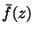

|
You are here : Control System Design - Index | Book Contents | Appendix C | Section C.9 C. Results From Analytic Function TheoryC.9 Application of the Poisson-Jensen formula to certain rational functionsConsider a biproper rational function given by
is a integer number and  and are polynomials of degrees mf and mg respectively. Then, due to the biproperness of , we have that . Further assume that
Define
where f(z) and g(z) are polynomials. Then
We then have the following result. Lemma 1.3 Consider the function h(z)
defined in (C.9.2), and a point
where P1,r is the Poisson kernel defined in (C.8.18). Proof Follows from a straightforward application of Lemma C.2
|